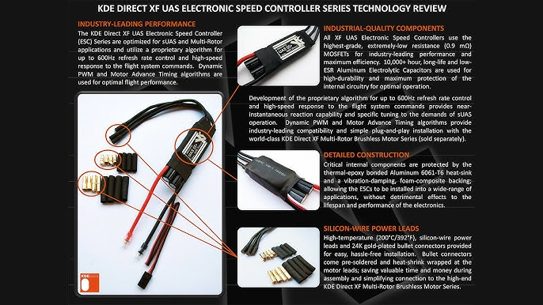

What is an Industrial ESC?
Industrial ESCs are high-power motor controllers used in heavy-lift and commercial drones.
They are designed for reliability, high current handling, and long-duration operations.
Key Features
- High current ratings (60A–200A+)
- Supports high-voltage batteries
- Improved thermal protection
- Stable operation for large motors
Typical Use Cases
- Delivery drones
- Agriculture UAVs
- Heavy-lift camera drones
- Industrial inspection platforms